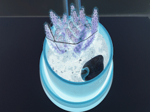

Votre cactus devra être empoté dans une terre pour cactus et plante grasse
Le cactus désire une luminosité directe
Environnement sec
Arrosages espacés
Entre les arrosages la terre est complètement sèche
Arrosez-le toutes les deux semaines l’été
trois semaines
un mois
le restant de l’année
Observez bien votre cactus
Fiez-vous aux indications si-haut
Mais
Rappelez-vous
Chaque cactus est unique
Respectez ses caprices
Vous vous adapterez au cactus
Le cactus ne s’adaptera pas à vous
Rappelez-vous
Observez
Vous verrez
Lorsque vous tomberez dans la lune
Des détails vous sauteront aux yeux
S’il est faible
Agissez immédiatement
Les nouvelles pousses vertes amande
La base solide
Santé
Une décoloration brunâtre molle
Pourriture
Entamez une procédure chirurgicale
Posez la plante délicatement sur une table
Prenez une lame de rasoir
Couper tout sauf le vert amande
Tout ce qui est rouge
Tout ce qui est noir
Laissez sécher la plaie
Rempotez le
Il ira mieux
Les cactus veulent être stimuler
Ils ont des rêves
Vous savez
Votre cactus s’imagine un jardin
Pouvez-vous vous imaginez ce jardin ?

Avez-vous bien pris soin de votre cactus ?
Oui Non